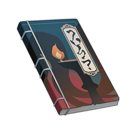

Liyue · Books & Literature
Mt. Lingmeng Gossip
This three-volume Liyue collection retells Chenyu Vale stories about Ley Line apparitions and an unverified ancient ruler of Mt. Lingmeng.

Three volumes of Chenyu Vale stories
Mt. Lingmeng Gossip collects three Liyue texts about mountain apparitions, a hidden cavern, and a local song about a forgotten ruler. It moves between village lore, a traveler’s account, reports about unsuccessful searches, and a lament whose history cannot be verified.
The compilation preserves local traditions; it does not claim to be a complete survey of Mt. Lingmeng or a single eyewitness chronicle.
Volume I: fog, spirits, and Ley Line memories
The first volume attributes to village elders a story that former inhabitants and supernatural beings once lived on Mt. Lingmeng. It says a great war erased them and that memories in the Ley Lines can make their shadows appear in rain and fog.
The elders treat encounters as omens and warn people away from the mountain’s weather. Those details are part of their reported belief; the book does not verify that every fog bank or apparition has this cause.
Volume II: the mariner and Lan Jing
A mariner’s story describes a raft journey through glowing waterways into a cavern where ghostlike figures sing and cast their jade ornaments into a black pool. The mariner leaves markings on the way back to Qiaoying Village.
Later searchers from the Yuehai Pavilion and Millelith reportedly fail to find a settlement. Lan Jing, a physician, enters the mountain while young and never discusses what he saw. An inkstone found among his belongings after his death is said to have come from the cave, but its origin can no longer be confirmed.
Volume III: the unnamed demon lord
The final volume relays songs about an unnamed demon lord who ruled Chenyu Vale, commanded the local wilds, and controlled the Bishui River. The story says she started a war, was defeated, and was sealed beneath a dark pool beside a lost lunar chariot.
The book directly cautions that the relevant historical details cannot be verified. It identifies a lamenting song as the only surviving support and ends with speculation that an ancient presence might still be heard below the water.
Keep the identity unresolved
The collection does not name the demon lord or prove that the cave, mariner, inkstone, and song describe one continuous event. Later Chenyu Vale quests introduce their own named Adepti and regional history, but the book itself does not identify its unnamed figure with any of them.
Its strongest contribution is the record of how local traditions remember a lost power while openly acknowledging that the evidence has faded.
This is an original CoreGG reading guide, not an official HoYoverse article or a reproduction of the game text. Source links below identify the records used so you can check the original context.
Sources & references
Check these sources for the original game text and reference trail.